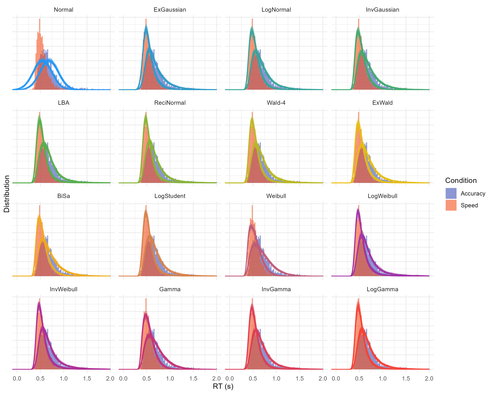
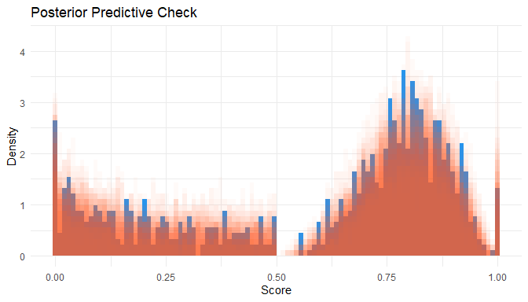
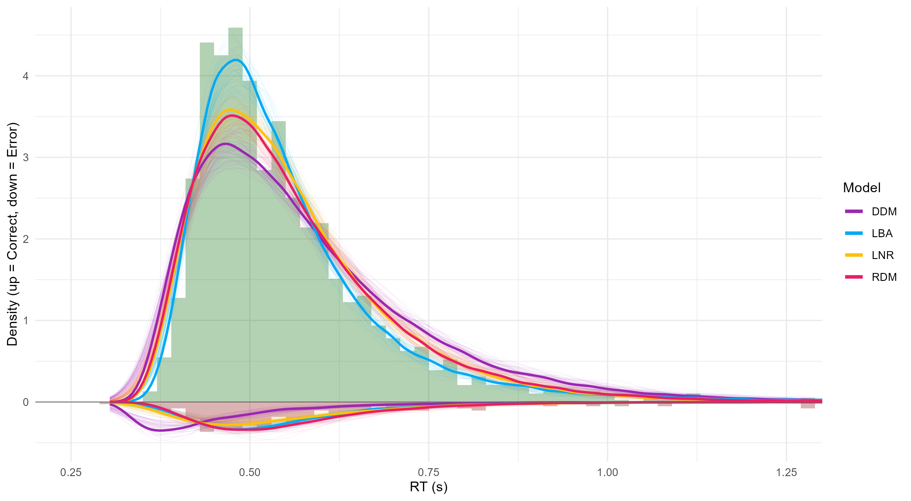

Models of Cognition for Subjective Scales and Decision Making Tasks in R
This R package is dedicated to facilitate the application of computational cognitive models in R under a Bayesian framework. These are useful in the field of cognitive science and computational neuropsycholology.
Status
This package is under development. It’s not meant to be stable and robust at this stage. Use at your own risks. If you have suggestions for improvement, please get in touch!
- I’ve been seeking the best way to implement various sequential models for a long time, initially trying and failing in R, then developing a lot of hopes for a Julia solution (see the SequentialSamplingModels.jl), but I’m back at making some new attempts in R.
- See also this attempt at creating tutorials
Features
-
Models for Subjective Ratings Data (Likert/Slider Scales)
-
Models for Reaction Times
-
Models for Decision Making (Choice + RT)

What are Computational Cognitive Models?
Measures from cognitive tasks, such as decision-making paradigms involving fast responses or ratings, often produce noisy, specific, and complex patterns of results. Broadly speaking, there are three ways of analysing such data.
- The Summary Statistics Approach: The traditional approach often involves not bothering with any of the distinctive characteristics of cognitive data, assume that observations are Normally distributed, and summarise them using simple statistics such as means (which is what linear models do). This is the approach underlying most t-tests, ANOVAs, and linear regression models. Although often convenient, these methods may provide a poor description of the data and offer only limited insight into the cognitive processes that generated the observations.
- The Distributional Approach: A more principled approach is to choose statistical models that better account for these particular distributions. This can involve transforming the data (for example, log-transforming reaction times so that linear models are more justified), using robust statistical methods (resilient to non-normality), or adopting more appropriate probability distributions (e.g., using Ex-Gaussian models for RTs). While these approaches often improve model fit and statistical inference, there can be a gap between the descriptive distributional parameters estimated and the cognitive mechanisms underlying the data generation process.
- The Computational Approach: The most recent approach is to use models that are specifically designed to approximate or account for the cognitive processes at stake. For instance, Evidence Accumulation Models conceptualize response time as the outcome of a noisy process of evidence accumulation in the brain. And Choice-Confidence models explain the bi-modal distributions often found with slider scales as the combination of a dual-process of discrete choice and continuous evaluation. These models combine a good distributional fit to the data with more meaningful and cognitively interpretable parameters.

Installation
if (!requireNamespace("remotes", quietly = TRUE)) install.packages("remotes")
remotes::install_github("DominiqueMakowski/cogmod")Usage
For each model implemented, cogmod provides a brms-compatible custom family (e.g., choco()) together with a stanvars object (e.g., choco_stanvars()) that injects the Stan code required to evaluate it. Both simply need to be passed to brms::brm() via the family and stanvars arguments - everything else (formula syntax, post-processing, predictions…) works like any other brms model.
Below, we simulate some data from the Choice-Confidence (CHOCO) model, a distribution useful to describe bimodal ratings (e.g., confidence or slider scales) as a mixture of a discrete choice (left vs. right side of the scale) and a continuous Beta-distributed evaluation.
library(cogmod)
library(brms)
library(easystats)
library(ggplot2)
set.seed(33)
df <- data.frame()
for (x in seq(0.1, 0.9, by = 0.1)) {
score <- rchoco(n = 100, p = 0.4 + x / 2, confright = 0.4 + x / 3,
confleft = 1 - x, pex = 0.03, bex = 0.6, pmid = 0)
df <- rbind(df, data.frame(x = x, score = score))
}A brms model can then be specified by adding family = choco() to the formula, and passing stanvars = choco_stanvars() to brm():
f <- bf(
score ~ x,
confright ~ x,
confleft ~ x,
precright ~ x,
precleft ~ x,
pex ~ x,
bex ~ x,
pmid = 0,
family = choco()
)
m_choco <- brm(f,
data = df, family = choco(), stanvars = choco_stanvars(),
chains = 4, backend = "cmdstanr"
)We can then analyze its results, and check its predictions like with any other models.
Code
# Generate predictions with easystats
pred <- estimate_prediction(m_choco, keep_iterations = 50, iterations = 50) |>
reshape_iterations()
insight::get_data(m_choco) |>
ggplot(aes(x = score, y = after_stat(density))) +
geom_histogram(bins = 100, fill = "#2196F3") +
geom_histogram(
data = pred, aes(x = iter_value, group = as.factor(iter_group)),
bins = 100, alpha = 0.03, position = "identity", fill = "#FF5722"
) +
labs(title = "Posterior Predictive Check", x = "Score", y = "Density") +
theme_minimal()
The model nicely recovers the bimodal shape of the observed data - something that traditional (unimodal) Beta-related models fail to capture (see the vignette for a comparison).
See the Subjective Ratings, RT-only Models, and Decision Making Models vignettes for more detailed examples.
